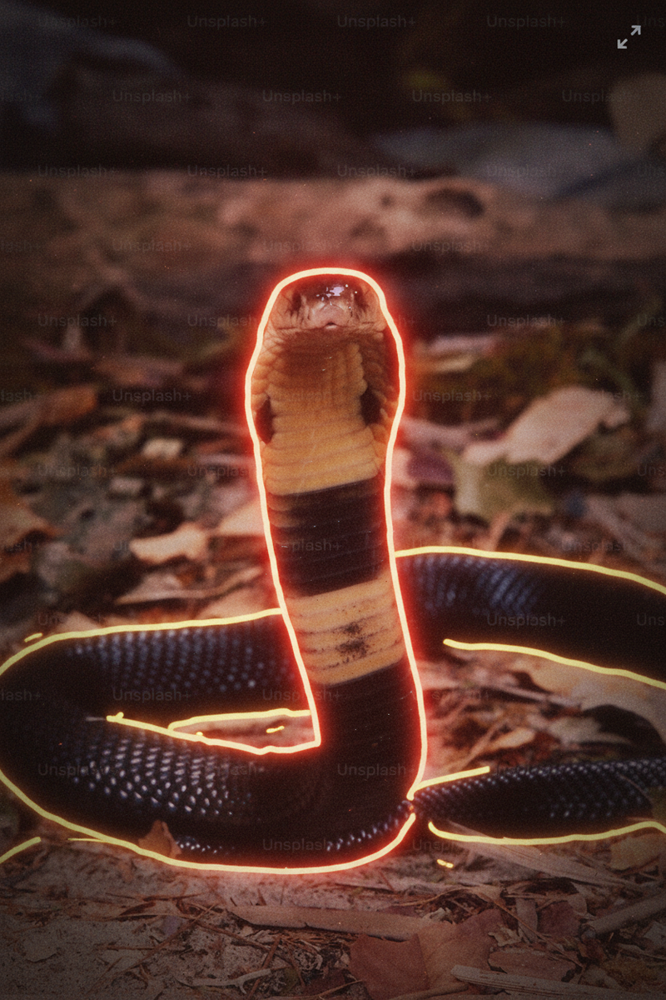

Decode Camera
In build · image upload now · live capture nextUpload a scene. Every object in frame gets outlined and read - the mechanism it's activating, the evolved stimulus it's imitating, the real input it stands in for.
Decode Camera is the scene surface of the Demismatch Tools suite. You hand it an image - your plate, your desk, the room you woke up in, the feed of an animal you saw on a walk - and it returns a scene-level HUD: each object in frame outlined, each one named against the mechanism it is activating in the organism looking at it.
It is not an object detector with a dictionary. Labels are cheap. A pattern-recognition model can tell you there is food on a plate. Decode Camera tells you which evolved circuit the plate is firing, why, and what real input the engineered stimulus is standing in for - full mechanism commentary on the image, not just tags.
Every read traces back to the atlas - the fourteen mechanisms plus R1 Touch, the hyperstimulus and mismatch conventions documented at cor.demismatch.com. Same source of truth as Decode Talk and Decode Web, different intake surface.
Two early scenes below, drawn from the current build. The plate is a worked example of engineered hyperstimulus. The snake is a worked example of ancient threat-circuit priority.

Formulated, photographed, engineered.
French toast, powdered sugar, syrup, banana, blueberry - a plate composed to fire wanting without resolving liking. The combination of fat, sugar, and contrast is not an ancestral signal set. No band saw food arranged this way, under studio light, in a matte-black bowl.
The outline names what the eye already knows but the tongue is about to forget: this is a proxy for caloric acquisition, not a report of what the organism needs now.
- Mechanism
- M13 Energy Regulation × M2 Pursuit (wanting-without-liking, Berridge-Robinson)
- Proxy
- Engineered hyperstimulus: fat + sugar + contrast, photographed for visual wanting
- Real input
- Whole food, seasonal, shared, requiring effort to obtain

Older systems go first.
A hooded cobra on leaf litter. Your cortical reader is still parsing the caption; your subcortical threat system already knows the shape. Evolution built the priority asymmetry directly into the wiring - subcortical-to-cortical projections are denser than the reverse.
The scene is chosen precisely because nothing in it should be decided by deliberation. The outline names what the organism already answered half a second ago.
- Mechanism
- M1 Threat Management (DA8 Phylogenetic Priority)
- Proxy
- None - this is the circuit behaving as designed
- Real input
- Ancestral recognition of a serpent silhouette, faster than cortex, faster than speech
Image upload now. Live camera next.
Scene-level mechanism commentary is a harder surface than text or web annotation. The failure modes are different: misread an image and the "read" is just a hallucination in prose. We are scaling it in stages rather than shipping a broken live-camera toy.
- Now Image upload. Drop in a photo - plate, desk, room, scene from your phone. Decode Camera returns the outlined HUD and the mechanism commentary for each flagged element. Same grounding (Cor v4) as the text and web surfaces.
- Later Batch and history. Read a day of photos. Surface the mismatch pattern across the scenes, not just per-scene. This is the moment the tool starts becoming diagnostic rather than decorative.
- Next Live capture. Phone camera or webcam stream. Real-time HUD overlay. Calibrated so that the read does not interrupt presence the way a notification would - the HUD lives alongside the scene, not in place of it.
Decode Camera is the scene surface. Decode Talk is the dialogue surface - situation in, evolutionary read out - and is live today at demismatch.com/decode-talk/. Decode Web is the browser surface - a Chrome side panel that will annotate live pages in place. In build.
Same atlas underneath. Different intake. Different output form. You do not need all three to use any one of them.